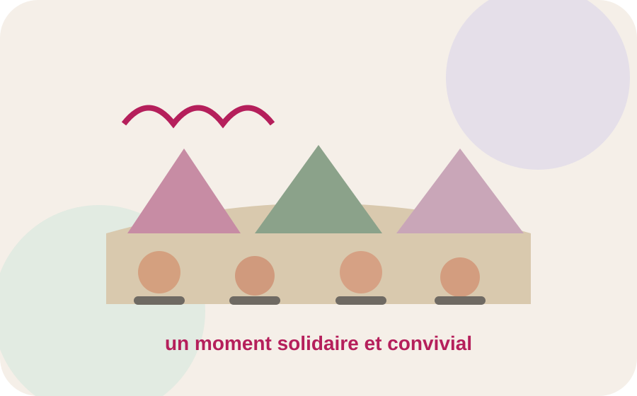
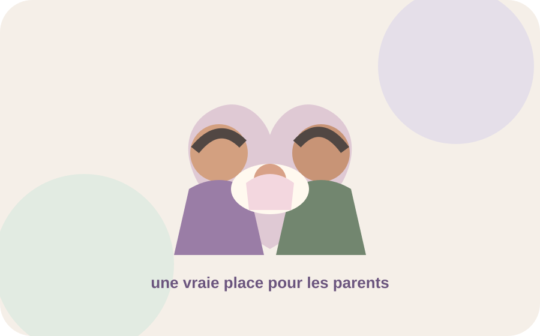
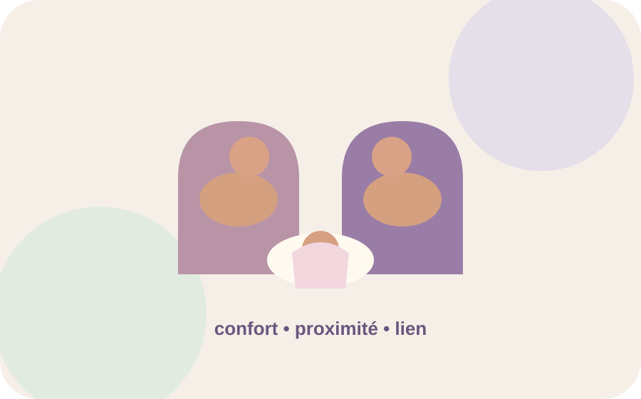
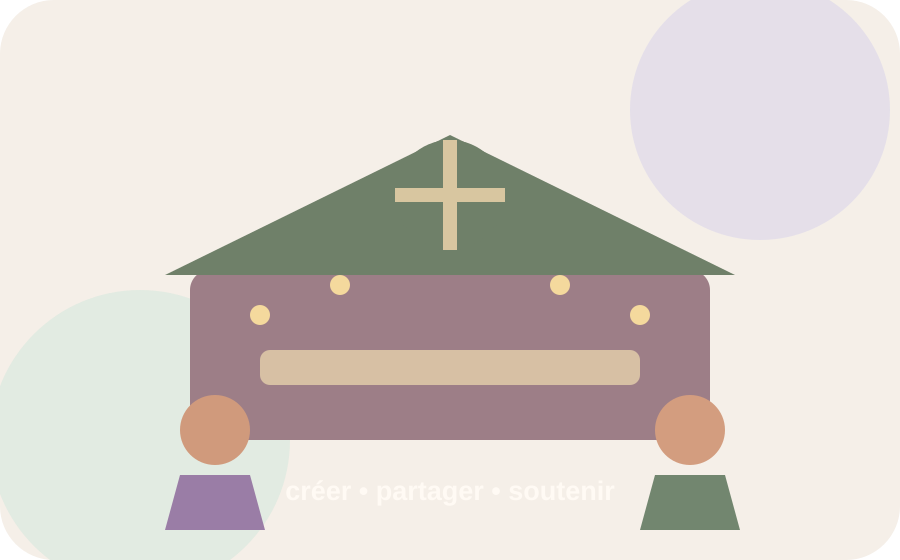
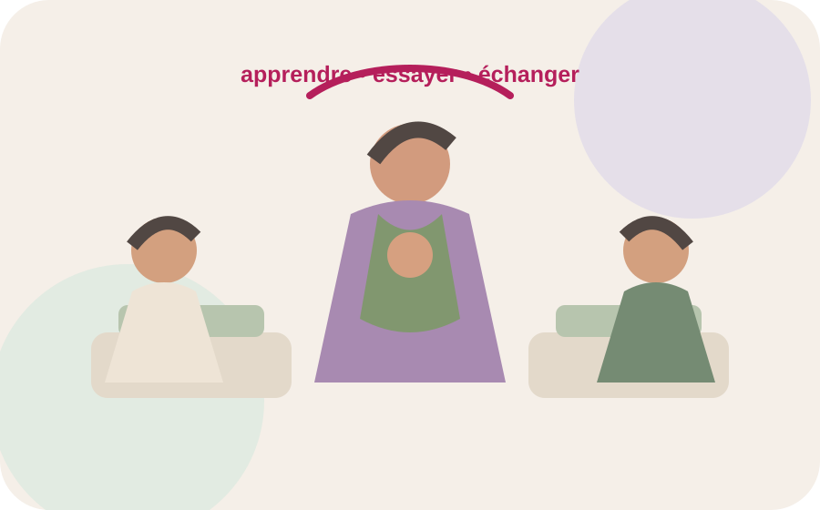

Actualités
Les nouvelles de l'association.
Collectes, projets et moments importants : retrouvez les dernières nouvelles d'À p'tits pas.

COLLECTE
Mai 2026
Marché de printemps 2026
La première édition a permis de récolter plus de 1 000 € au profit des projets de l'association.
Voir le projet →
MATÉRIEL
Projet réalisé
La salle des parents du 4N rénovée
7 000 € ont été investis pour améliorer l'accueil et le confort des familles.
Voir le projet →
PARENTALITÉ
Projet réalisé
Des fauteuils d'allaitement pour le 4N et le 4B
Un équipement pensé pour accompagner le confort et le lien parent-bébé.
Voir le projet →
COLLECTE
Chaque décembre
Le Marché de Noël
Un rendez-vous solidaire organisé chaque année en décembre.
Bientôt →
PARENTALITÉ
2026
Les ateliers de portage continuent
Un projet renouvelé chaque année, avec 7 ateliers financés par la CAF en 2026.
Voir les ateliers →